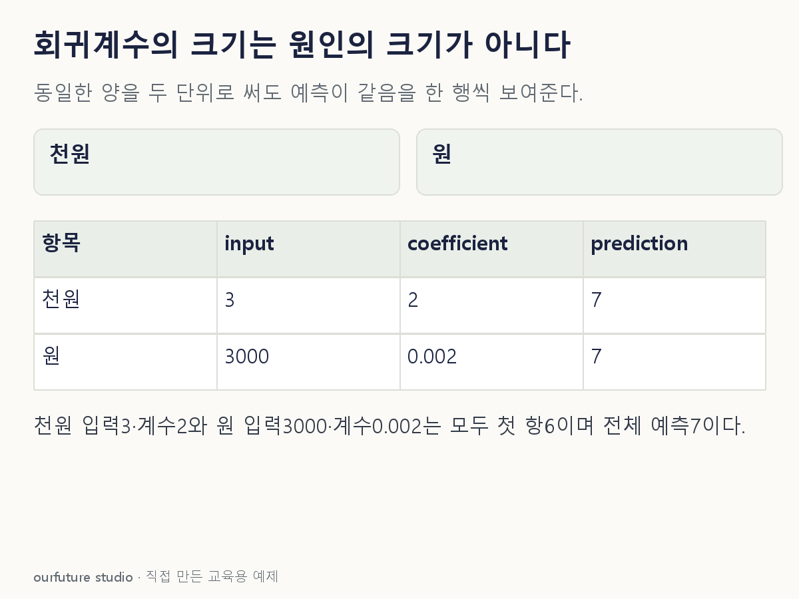

조건을 바꾸며 확인하기
정해진 선형식의 대수적 환산이다. 재적합·특성 중요도 순위·현실 인과효과 추정이 아니다.
설명 그림과 비교하기
아래 그림과 표는 고정된 설명 예제입니다. 기본·변형 중 어떤 조건인지 캡션을 읽고, 바꾼 입력의 결과는 계산 칸에서 확인하세요.

같은 문제를 직접 골라 보기
예측식 ŷ=2x₁+0.01x₂에서 x₁은 천원 단위다. 원 단위 w₁=1000x₁로 바꾸고 같은 예측을 유지한다.
조건을 더 바꾸면?
같은 예측 정보를 거의 그대로 담은 특성 두 개가 있다. 하나의 순열 중요도가 작으면 현실에서 그 특성이 쓸모없다고 확정할 수 있는가?
변형 풀이 확인
확정할 수 없다. 다른 특성이 대체 정보를 제공했는지 함께 살펴야 한다.
순열 중요도는 고정한 모형·자료·평가 점수에 대한 값이다. 상관된 대체 특성이 있으면 하나만 섞어도 점수가 거의 떨어지지 않을 수 있다. 이는 인과적 무효를 뜻하지 않는다.
계수는 단위, 중요도는 평가 조건부터.